1. Pfadregel
Mit einem KI-Tutor lernen
Ein KI-Tutor erklärt dir diese Seite und hilft dir bei den Übungen. Wähl deinen Assistenten:
Mit Claude öffnen Mit ChatGPT öffnen Mit Mistral Vibe öffnen
Du nutzt dein eigenes Konto beim Anbieter. Der Assistent ist kein Angebot von lernapps.net: lernapps liefert nur Inhalte und Übungen. Die Wahl gilt für alle Seiten, nur auf diesem Gerät.
Warum?
Der Baum zeigt dir alle Wege – aber wie wahrscheinlich ist ein bestimmter Weg? Die erste Pfadregel beantwortet genau das. Sie ist die Rechenregel hinter jeder mehrstufigen Aufgabe, und sie ist kurz: multiplizieren.
Regel
- 1. Pfadregel
Die Wahrscheinlichkeit eines Pfades ist das Produkt der Wahrscheinlichkeiten aller Zweige auf diesem Pfad (Produktregel).
Merkhilfe: Entlang des Pfades wird mal gerechnet. „Erst rot und dann blau“ heißt multiplizieren.
Beispiel
Erst rot, dann blau
Urne mit 3 roten, 2 blauen und 1 gelben Kugel. Du ziehst zweimal mit Zurücklegen. Wie groß ist ?
- Zweig: .
- Zweig: (mit Zurücklegen ist die Urne wieder voll).
- .
Häufiger Fehler
wäre größer als jede der beiden einzelnen Wahrscheinlichkeiten – unmöglich für „erst das eine und dann das andere“. Ein Pfad ist nie wahrscheinlicher als einer seiner Zweige.
Bild

Der Baum aus dem Beispiel: Urne mit 3 roten (R), 2 blauen (B) und 1 gelben (G) Kugel, zweimal mit Zurücklegen. Auf beiden Stufen stehen dieselben Zweige: rot 3/6, blau 2/6, gelb 1/6. Der Pfad rot-blau ist orange. Unter den neun Enden stehen die Pfadwahrscheinlichkeiten: rot-rot 1/4, rot-blau 1/6, rot-gelb 1/12, blau-rot 1/6, blau-blau 1/9, blau-gelb 1/18, gelb-rot 1/12, gelb-blau 1/18, gelb-gelb 1/36.
Quelle: Eigene Darstellung der Mathe-Karte. Lizenz: MIT.Video dazu
Beim Abspielen gehen Daten an YouTube/Google, darunter deine IP-Adresse.
- Noch eine Erklärung: Pfadregeln bei serlo.org
Übung
Aufgabe Nr. 1
Aufgabe Nr. 1
Du wirfst eine Münze zweimal. Wie groß ist P(Zahl, Kopf)? Also: erst Zahl, dann Kopf. Das Bild zeigt den Baum, der Pfad Zahl-Kopf ist orange.
P(Zahl, Kopf) = …
Lösung
Pfad: Start → Zahl → Kopf
Zweige: P(Zahl) = 1/2, P(Kopf) = 1/2
- Pfadregel: P = 1/2 · 1/2 = 1/4
Übung
Drei Beispielaufgaben, jede mit ihrer Lösung:
Aufgabe Nr. 1
In einer Urne liegen 3 rote, 2 blaue und 2 gelbe Kugeln. Du ziehst zweimal mit Zurücklegen. Wie groß ist ? Gib das Ergebnis als Dezimalzahl an, auf zwei Nachkommastellen gerundet.
Tipp
Rechne erst P(rot) und P(blau) für einen Zug aus. Dann multiplizierst du die beiden.
Lösung
- Alle Kugeln: 3 + 2 + 2. und sind Anzahl durch alle Kugeln.
- Mit Zurücklegen bleibt die Urne gleich: .
Richtige Antwort: 0,12
Aufgabe Nr. 2
In einer Urne liegen 3 rote, 1 blaue und 1 gelbe Kugeln. Du ziehst zweimal mit Zurücklegen. Wie groß ist ? Gib das Ergebnis als Dezimalzahl an, auf zwei Nachkommastellen gerundet.
Tipp
Rechne erst P(rot) und P(blau) für einen Zug aus. Dann multiplizierst du die beiden.
Lösung
- Alle Kugeln: 3 + 1 + 1. und sind Anzahl durch alle Kugeln.
- Mit Zurücklegen bleibt die Urne gleich: .
Richtige Antwort: 0,12
Aufgabe Nr. 3
In einer Urne liegen 2 rote, 1 blaue und 3 gelbe Kugeln. Du ziehst zweimal mit Zurücklegen. Wie groß ist ? Gib das Ergebnis als Dezimalzahl an, auf zwei Nachkommastellen gerundet.
Tipp
Rechne erst P(rot) und P(blau) für einen Zug aus. Dann multiplizierst du die beiden.
Lösung
- Alle Kugeln: 2 + 1 + 3. und sind Anzahl durch alle Kugeln.
- Mit Zurücklegen bleibt die Urne gleich: .
Richtige Antwort: 0,06